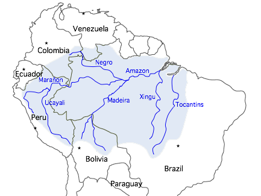

I) Questões Norteadoras
1) O que é saneamento básico e qual sua condição no Brasil?
Saneamento básico é o conjunto de serviços fundamentais que garantem condições adequadas de saúde e qualidade de vida. Envolve o abastecimento de água potável, o tratamento e a coleta de esgoto, a gestão de resíduos sólidos e a drenagem urbana.
No Brasil, a situação do saneamento ainda é crítica. Segundo o Sistema Nacional de Informações sobre Saneamento (SNIS, 2023), cerca de 35 milhões de pessoas não têm acesso à água tratada e mais de 90 milhões não têm coleta de esgoto. A região Norte é a mais defasada, principalmente a área amazônica, onde grande parte das comunidades ribeirinhas não conta com serviços básicos.
2) Lixão, Aterro Sanitário e Aterro Controlado
Lixão: Local de descarte sem controle ambiental. Causa poluição e proliferação de doenças.
Aterro Controlado: Recebe cobertura diária de terra, mas sem impermeabilização adequada, ainda gerando impactos.
Aterro Sanitário: Método mais seguro, com impermeabilização do solo, drenagem de chorume e monitoramento de gases.
Figura 1 – Esquema ilustrativo de aterro sanitário.
3) Impactos Socioambientais do Descarte Inadequado
O descarte incorreto de resíduos provoca a contaminação do solo e da água, prejudica o ar e atrai vetores de doenças. Socialmente, afeta populações vulneráveis que vivem próximas a lixões e sofrem com a exclusão e a falta de saneamento.
4) Poluentes Emergentes
Poluentes emergentes são substâncias químicas que aparecem nas águas, mas não são totalmente removidas pelos sistemas convencionais de tratamento. Exemplos incluem:
- Ibuprofeno – C13H18O2
- 17β-estradiol – C18H24O2
- Triclosan – C12H7Cl3O2
Esses compostos podem causar distúrbios hormonais e resistência bacteriana, além de afetar organismos aquáticos.
5) Política Nacional dos Resíduos Sólidos (Lei 12.305/2010)
A Política Nacional dos Resíduos Sólidos (PNRS) determina princípios de gestão integrada de resíduos, como a responsabilidade compartilhada entre governo, empresas e cidadãos. Promove também a logística reversa e incentiva a redução, reciclagem e destinação correta dos resíduos.
6) Saneamento Básico Sustentável
Para ser sustentável, o saneamento deve usar tecnologias limpas e promover o reaproveitamento de recursos. Algumas soluções são:
- Tratamento descentralizado de esgoto (biodigestores e wetlands construídos);
- Reuso de água para irrigação e limpeza urbana;
- Reciclagem e compostagem de resíduos orgânicos;
- Educação ambiental e planejamento urbano eficiente.
II) Inventário: Bacia Hidrográfica Amazônica
1) Localização e características da bacia
A Bacia Amazônica é a maior do mundo, com cerca de 7 milhões de km², abrangendo nove países e quase metade do território brasileiro. O clima é equatorial úmido, com chuvas intensas e alta biodiversidade. Sua vegetação predominante é a Floresta Amazônica.
2) Rio principal
O Rio Amazonas é o principal rio da bacia, com 6.992 km de extensão e a maior vazão do planeta. Ele nasce nos Andes Peruanos (como Ucayali) e deságua no Oceano Atlântico, no norte do Brasil.
3) Atividades econômicas relacionadas
- Transporte fluvial;
- Pesca artesanal e comercial;
- Extrativismo vegetal (borracha, açaí, castanha-do-pará);
- Turismo ecológico e científico;
- Geração de energia em usinas hidrelétricas regionais.
4) Qualidade da água
Em regiões urbanas como Manaus e Belém, o Rio Amazonas apresenta aumento da DBO (Demanda Bioquímica de Oxigênio) e contaminação por esgoto doméstico. Isso indica poluição orgânica e risco à saúde pública, especialmente nas margens habitadas.
5) Uso sustentável do rio
O uso sustentável do Rio Amazonas requer tratamento de esgoto urbano, fiscalização ambiental, incentivo à pesca sustentável e ao ecoturismo. Também é essencial fortalecer políticas públicas de educação ambiental e gestão integrada dos recursos hídricos.
Figura 2 – Mapa da Bacia Hidrográfica Amazônica (Fonte: Wikimedia Commons).
Referências (ABNT)
BRASIL. Lei nº 12.305, de 2 de agosto de 2010. Institui a Política Nacional de Resíduos Sólidos. Diário Oficial da União, Brasília, DF, 3 ago. 2010.
ANA – Agência Nacional de Águas e Saneamento Básico. Conjuntura dos Recursos Hídricos no Brasil 2023. Brasília: ANA, 2023.
SNIS – Sistema Nacional de Informações sobre Saneamento. Diagnóstico dos Serviços de Água e Esgotos 2023. Brasília: Ministério das Cidades, 2024.
PHILIPPI JR., Arlindo; MALHEIROS, Tadeu F. Saneamento, Saúde e Ambiente: fundamentos para um desenvolvimento sustentável. Barueri: Manole, 2015.